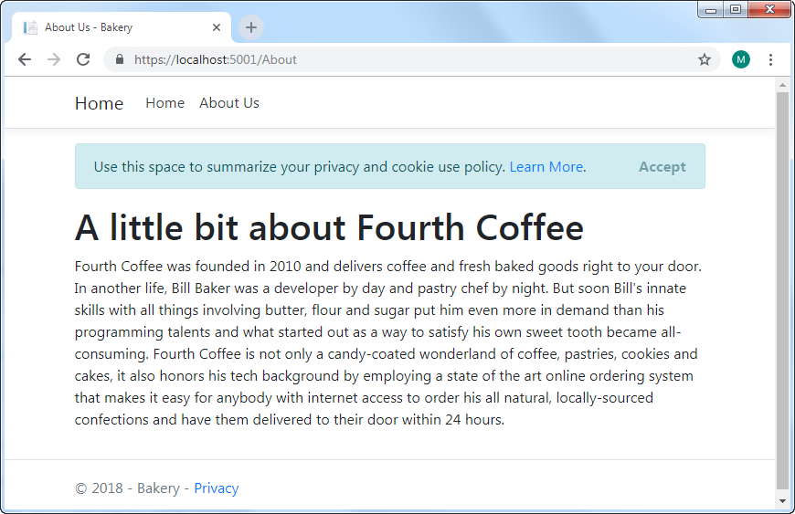
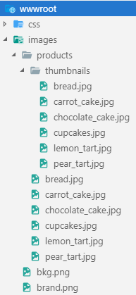
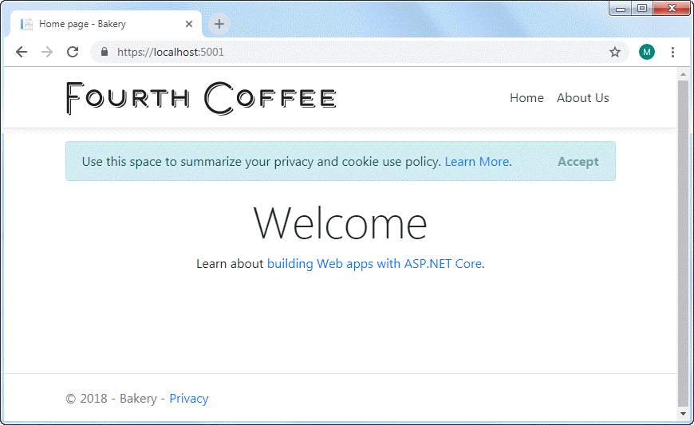

In this section, you will add an About page and use a tag helper to provide a link to it from the home page. You will use the ASP.NET Core scaffolding system to create the page, which is invoked in VS Code by commands executed in the terminal.
If the application is still running from the previous section, you can either open another terminal (Ctrl+Shift+') or you can press Ctrl+C to shut the web server down. Once you have done that, execute the following command:
dotnet new page --name About --namespace Bakery.Pages --output Pages
The command generates a Razor Page with a PageModel file. You need to specify the namespace otherwise the default value of MyApp.Namespace is used. Likewise, if you don't specify the Pages directory as the output location, the page will be generated in the folder where the command is executed.
Once you get confirmation that the page was created successfully, open the About.cshtml file (the content page), and amend its content to the following:
@page
@model Bakery.Pages.AboutModel
@{
ViewData["Title"] = "About Us";
}
<section id="main">
<h1>A little bit about Fourth Coffee</h1>
<p>
Fourth Coffee was founded in 2010 and delivers coffee and fresh baked goods right to your door.
In another life, Bill Baker was a developer by day and pastry chef by night.
But soon Bill's innate skills with all things involving butter, flour and sugar put him
even more in demand than his programming talents and what started out as a way to satisfy
his own sweet tooth became all-consuming. Fourth Coffee is not only a candy-coated wonderland
of coffee, pastries, cookies and cakes, it also honors his tech background by employing a state
of the art online ordering system that makes it easy for anybody with internet access to
order his all natural, locally-sourced confections and have them delivered to their
door within 24 hours.
</p>
</section>
This is the original content from the Web Pages template. The only differences are the @page directive at the top of the file, indicating that this is a Razor Page, the @model declaration, and the use of the ViewData property to hold the title of the page. In Web Pages, this was handled by the PageData property, which had a version based on the dynamic type. The team behind Razor Pages have largely moved away from using the dynamic type.
Adding Navigation
Main site navigation is located in a layout page, which acts as a template for all pages that reference it. To change it, open the _Layout.cshtml file located in the Pages/Shared folder. Locate the lines of code that look like this:
<li class="nav-item">
<a class="nav-link text-dark" asp-area="" asp-page="/Index">Page1</a>
</li>
<li class="nav-item">
<a class="nav-link text-dark" asp-area="" asp-page="/Index">Page2</a>
</li>
They start at line 30. Change them so that they look like this:
<li class="nav-item">
<a class="nav-link text-dark" asp-page="/Index">Home</a>
</li>
<li class="nav-item">
<a class="nav-link text-dark" asp-page="/About">About</a>
</li>
Run the application (dotnet run) and navigate to https://localhost:5001. Then click on the About link to ensure that the navigation works. You should arrive at the page you just created:

The links are generated by tag helpers. These are components that are designed to target specific tags in the HTML. The anchor tag helper targets the HTML a element. Instead of providing an href attribute to point to an internal page, you provide an asp-page attribute that takes the path of the page, relative to the root Pages folder. The framework constructs the correct URL for the resulting hyperlink. The asp-area attribute in the original tag helper is assigned an empty string. You are not working with areas in this example, so the attribute has been removed to reduce clutter.
Finishing Off
Finally in this section, you will tweak the layout page a little more to include a brand image and add some styles. You can obtain the image files from the original bakery template that I have hosted on GitHub.
Create a folder named images in the wwwroot folder. Within that, create another folder named products, and within that, another folder named thumbnails. Then copy the images to the correct folders. The final folder structure should look like this:

Alter the anchor tag with the navbar-brand CSS class to include an image as shown in the highlighted section:
<body>
<header>
<nav class="navbar navbar-expand-sm navbar-toggleable-sm navbar-light bg-white border-bottom box-shadow mb-3">
<div class="container">
<a class="navbar-brand" asp-page="/Index">
<img class="img-fluid" src="/images/brand.png" alt="Fourth Coffee" />
</a>
<button class="navbar-toggler" type="button" data-toggle="collapse" data-target=".navbar-collapse" aria-controls="navbarSupportedContent"
aria-expanded="false" aria-label="Toggle navigation">
<span class="navbar-toggler-icon"></span>
</button>
Finally, add the following style the the site.css file, found in wwwroot/css:
.navbar-nav {
justify-content: flex-end;
}
Bootstrap 4 uses the CSS Flexible Box Layout - also known as FlexBox - to control layout, rather than CSS floats that was used in previous versions of Bootstrap.
Now hard-refresh the page in the browser, using Ctrl+R to clear any cached versions of the style sheet. It should look like this:

Summary
In this section, you have seen how to use the scaffolding commands to add Razor Pages. You have also used the anchor tag helper to adjust the navigation for the site and added a little styling to the style sheet. In the next section you will begin to work with data by creating a Model for the application and adding Entity Framework Core.
Further Reading
Next: Create a Model
Previous: Getting Started